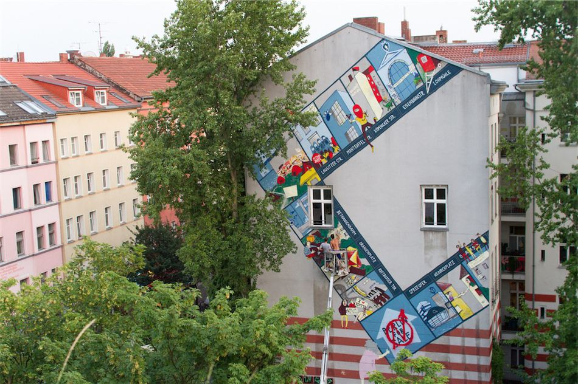
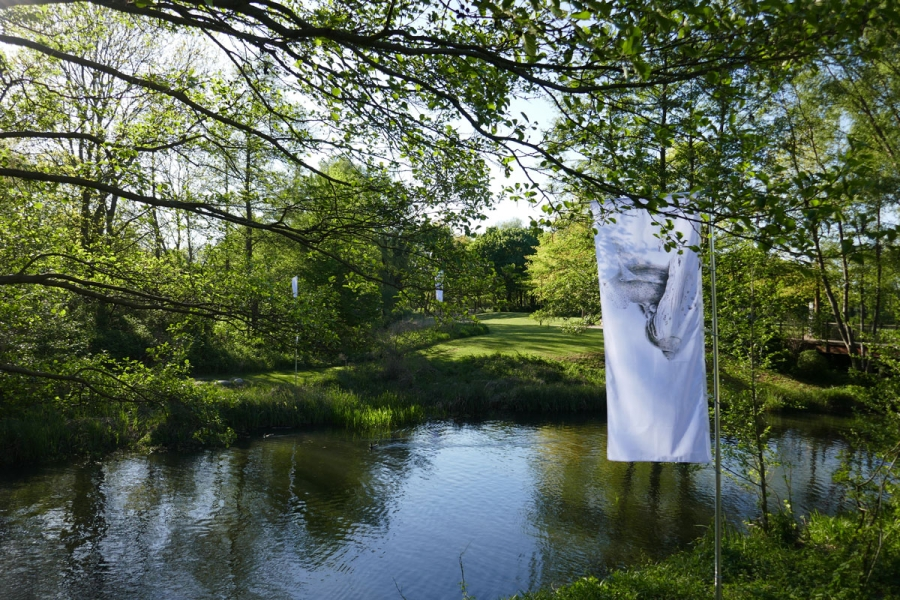
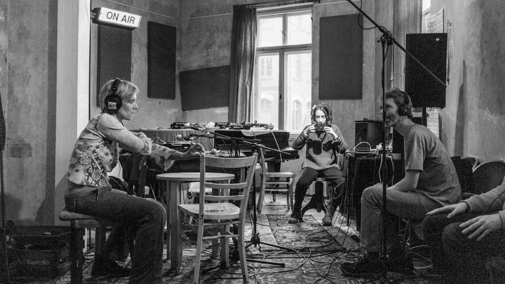

Kunst schafft Dialog. Unsere Kulturprojekte fördern kreative Zusammenarbeit, internationale Perspektiven und gesellschaftlichen Austausch weltweit und lokal.

"Reclaim the City" – Kunst im urbanen RaumInternationale Künstler*innen intervenieren im öffentlichen Raum und gestalten Stadt als Ort der Teilhabe. Murals, Klanginstallationen und performative Spaziergänge thematisieren soziale Ungleichheit, Gentrifizierung und Erinnerungskultur.

"Wasserlinien" – Kunst & Ökologie am FlussEin transdisziplinäres Kunstprojekt an Flussufern: Lokale und internationale Künstlerinnen beschäftigen sich mit Wasser als Lebensquelle, als Konfliktfeld und als poetisches Motiv. Workshops, Videoarbeiten und temporäre Skulpturen entstehen gemeinsam mit Anwohnerinnen.

"Sonic Borders" – Klangkunst zwischen KulturenKünstler*innen arbeiten an der Schnittstelle von traditioneller Musik, Field Recording und digitaler Soundkunst. Performances, Installationen und DJ-Sets setzen sich mit kulturellem Erbe und transkultureller Klangästhetik auseinander.